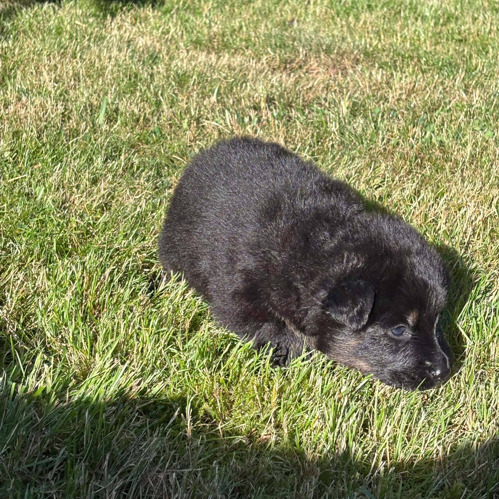
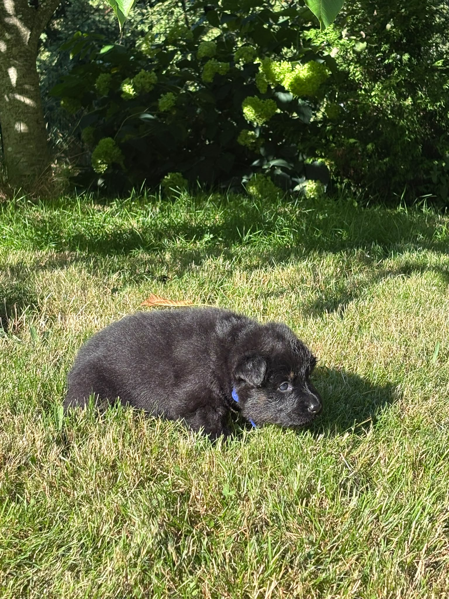
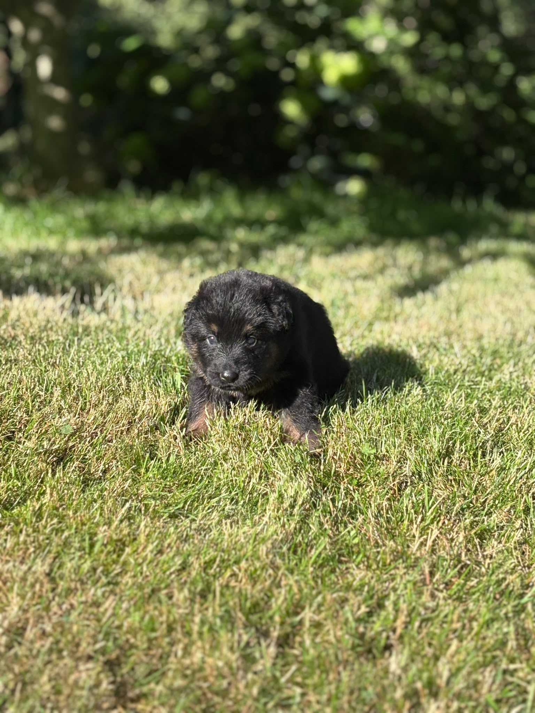
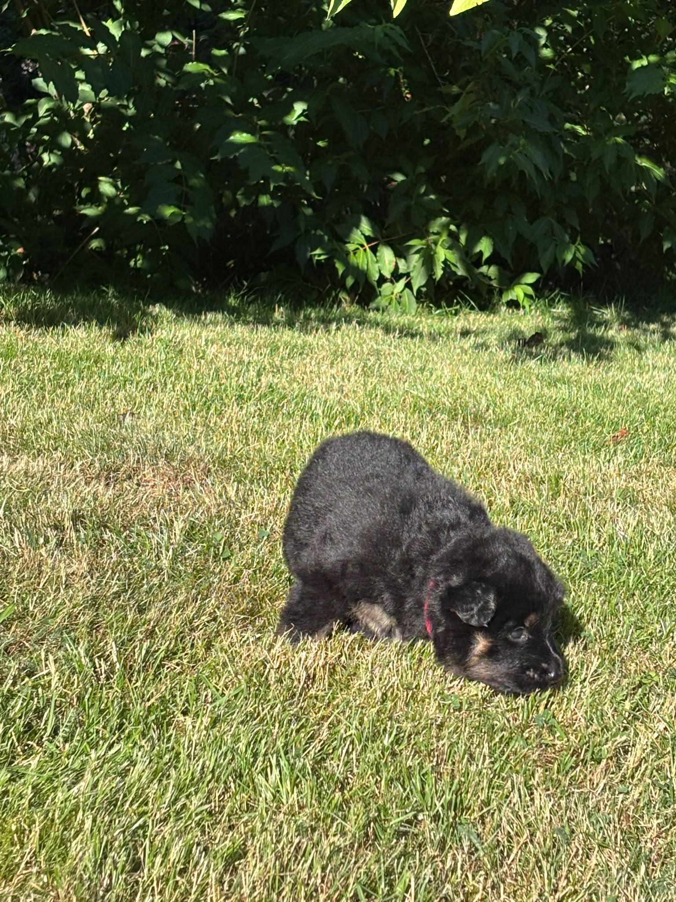
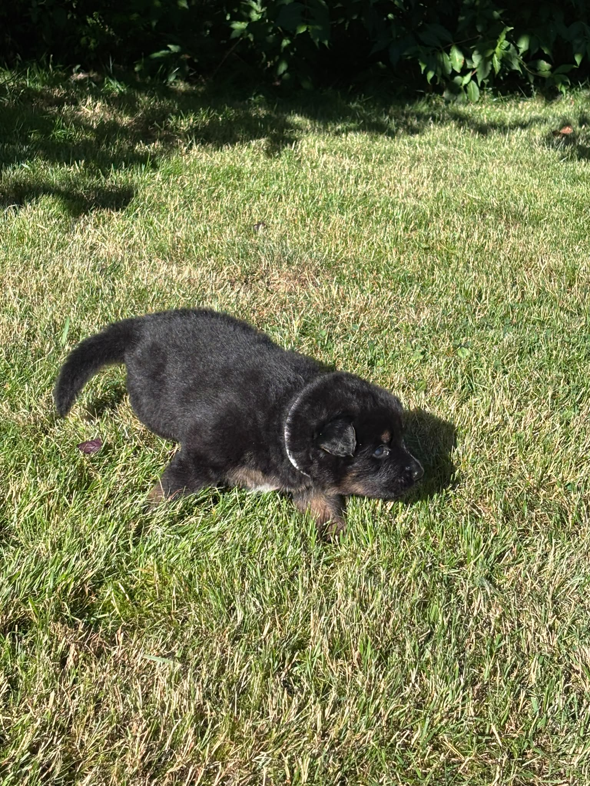
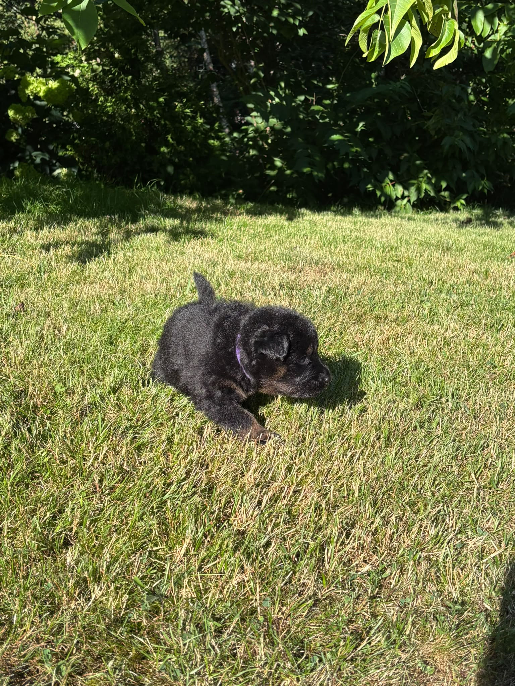

Narozený Vrh „A“
Spojení: Čiperka x Baltazar
Datum narození: 20. července 2026 | Odběr: polovina září 2026
 Matka: Čiperka
Matka: Čiperka
 Otec: Baltazar Noční hlídka
Otec: Baltazar Noční hlídka
Matka: Čiperka z Malého údolí
Výsledky: DKK B, DM: G/G
Ocenění: Výborná 4 (V4)
Zkoušky: FCI-BH/VT
Bonitace: A2, K3, W2 (Chovná fena)
Profil v KPCHP ↗
Otec: Baltazar Noční hlídka
Výsledky: DKK A, DLK 0/0, DM: N/N
Ocenění: Český šampion, Výborný, 3x CAC, Národní vítěz
Zkoušky: (viz databáze)
Bonitace: A1, I1, K2, W2/B1 (Chovný pes)
Profil v KPCHP ↗
Představujeme naše štěňátka

Aranka Fenka (Holka)
Akhiro Pejsek (Kluk)
Aira Fenka (Holka)
Ambra Fenka (Holka)
Apollo Pejsek (Kluk)
Amir Pejsek (Kluk)